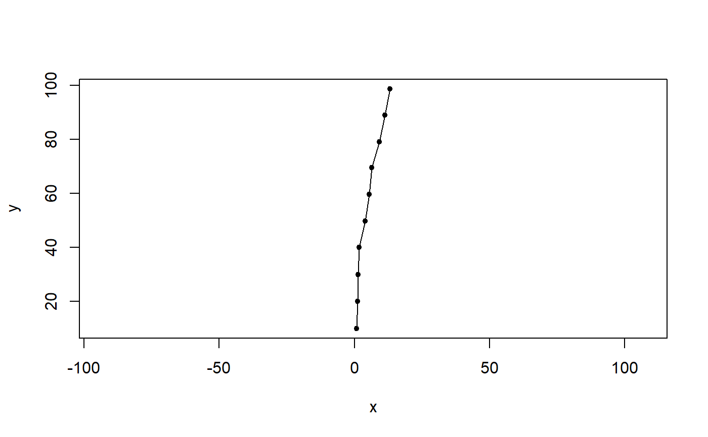

crw.RdSimulate a random walk as series of equal-length steps with turning angles drawn from a normal distribution.
crw(theta = c(0, 5), stepLen = 10, initPos = c(0, 0), initHeading = 0, nsteps = 10000)
| theta | A 2-element numeric vector with turn angle parameters (theta[1] = mean; theta[2] = sd) from normal distribution. |
|---|---|
| stepLen | A numeric scalar with total distance moved in each step. |
| initPos | A 2-element numeric vector with nital position (initPos[1]=x, initPos[2]=y). |
| initHeading | A numeric scalar with initial heading in degrees. |
| nsteps | A numeric scalar with number of steps to simulate. |
A two-column data frame containing:
x coordinates
y coordinates
First, nsteps turn angles are drawn from a normal distribution. Second, the cumulative sum of the vector of turn angles defines the heading within each step. The x and y component vectors in each are then calculated and summed to obtain the simualted path.
Adapted from code provided by Tom Binder.
foo <- crw(theta=c(0,5), stepLen=10, initPos=c(0,0), initHeading=0, nsteps=10) plot(foo,type="o",pch=20,asp=c(1,1))